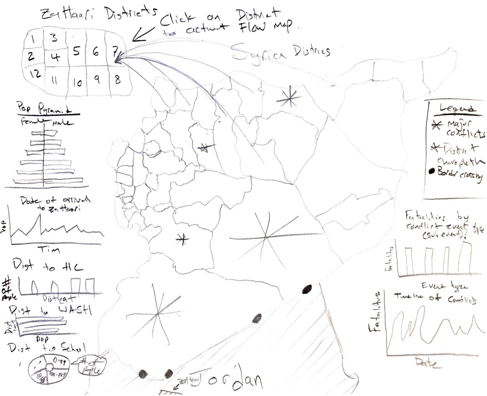
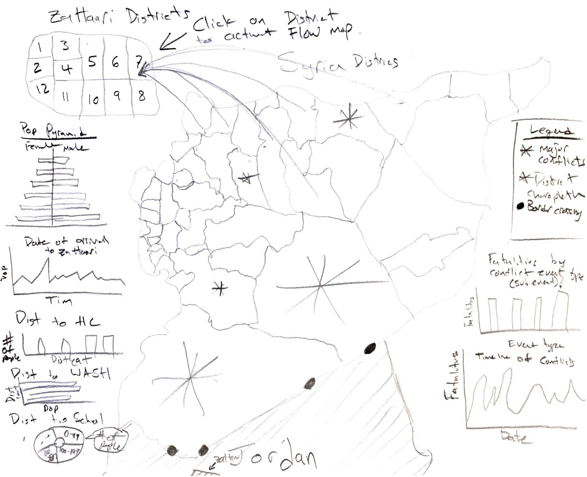

The Za’atari refugee camp is located near Mafraq governorate, Jordan and is the largest refugee camp for Syrian refugees, with a peak population of 83,000 individuals in March 2015. The camp opened on July 28th, 2012, near the beginning of the Syrian Civil War, which is estimated to have displaced over 10 million Syrians. As of October 2018, the Za’atari camp population is still nearly 80,000 and 20% are children under 5 years old. The camp is split into 12 districts and has a variety of important refugee resources including basic needs (blankets, utensils, mattresses, etc.), schools, health clinics, food, water sanitation, and more.
Overall camp administration is coordinated by the Syrian Refugee Affairs Directorate and the United Nations High Commissioner for Refugees (UNHCR) and large funding sums are donated to the camp by the Jordanian government. Many other stakeholders exist for camp administration and services including the following (not exhaustive): UNICEF, MercyCorps, Oxfam, World Food Programme, UNESCO, ACTED, and more.
Overall camp administration is coordinated by the Syrian Refugee Affairs Directorate and the United Nations High Commissioner for Refugees (UNHCR) and large funding sums are donated to the camp by the Jordanian government. Many other stakeholders exist for camp administration and services including the following (not exhaustive): UNICEF, MercyCorps, Oxfam, World Food Programme, UNESCO, ACTED, and more.
The major aim of our geovisualization is to present camp population time trends and locational differences in demographics. Specifically, our coordinated view of the Za’atari camp displays a map of the camp itself, a miniaturized map of Syria, and variety of district-based demographic charts. We hope our project provides users with an interactive, engaging, and detailed view of Za’atari camp trends and demographics in order to increase awareness of the reality of life in the camp.
For this coordinated view of Za’atari demographics and trends, data and shapefiles were obtained from the REACH Initiative. We reviewed and cleaned the data in Excel and used pivot tables to extract the necessary data we needed to create our charts. In addition to data cleaning, in the early stages of creating our geovisualization, we drew sketches of how we envisioned the coordinated view. A draft sketch can be seen below:

After generating our vision for the coordinated view, we then began the coding process in Atom 1.37. We first made the underlying base map of the Za’atari camp split into its 12 districts. A chloropleth was then overlaid on the map representing the population density by district. The miniaturized Syria map was then added on top of the base camp map and a chloropleth of camp district population density was overlaid. We then utilized D3 to set and call in our data, then C3 to create the various charts.

After generating our vision for the coordinated view, we then began the coding process in Atom 1.37. We first made the underlying base map of the Za’atari camp split into its 12 districts. A chloropleth was then overlaid on the map representing the population density by district. The miniaturized Syria map was then added on top of the base camp map and a chloropleth of camp district population density was overlaid. We then utilized D3 to set and call in our data, then C3 to create the various charts.
The major JavaScript libraries we used for this project include Leaflet, jQuery, D3, C3, Bootstrap, FontAwesome, and Chroma. Leaflet was utilized as the base web mapping and info/legend generating library, jQuery and Bootstrap were used for increased coding efficiency and design, D3 was utilized for setting and initializing the data, C3 was used for creating the charts, FontAwesome was used for page fonts, and Chroma was used for chloropleth and legend colors. Tile layers were obtained from Carto DB, OpenStreetMap, and the ArcGIS Online map server.